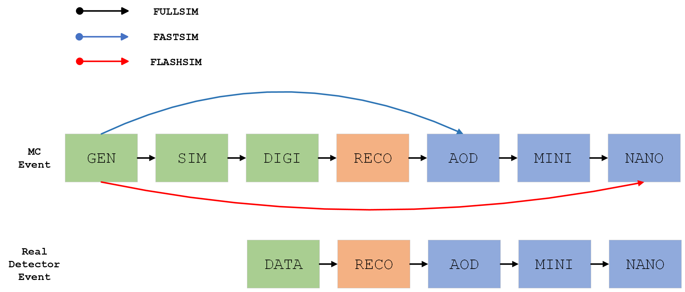
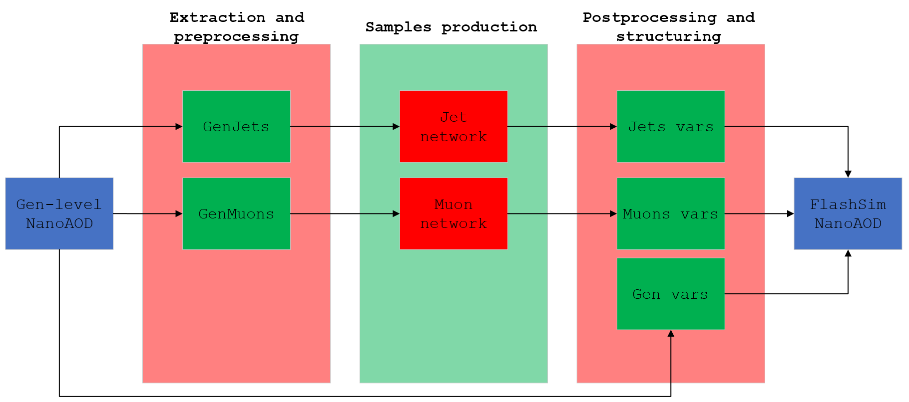

PLEASE NOTE THAT THIS IS STILL A WORK IN PROGRESS AND WILL BE UPDATED IN THE NEAR FUTURE
The following pages serve as an introduction to the ideas behind our FlashSim prototype, a ML based simulation framework for the needs of the CMS experiment at CERN.
We can visualize the classical simulation pipeline (FullSim) as being broadly divided into three steps:
- Generation: the results from theoretical calculations, typically consisting in a list of final-state, stable particles;
- Simulation: the actual simulation of all the interactions with the detector submodules, (e.g. due to the photoelectric effect, Compton scattering, bremsstrahlung, ionization, multiple scattering, decays, nuclear interactions, \(\dots\) for each particle);
- Digitization and Reconstruction: the conversion to electronic readout and the passage through the hundreds of reconstruction algorithms (common step with real detector events), resulting in the RAW analysis objects.
Sounds costly, doesn't it? What if we tried to use ML to skip the last two steps and maybe even generate data directly into the standard analysis format (NanoAOD)? See below:

Where we've also shown a competing approach, CMS FastSim.
As a first proof-of-concept we realized two networks, one for generating Jets and the other for Muons. We started from the Gen-level information of an existing NanoAOD dataset, and generated a new, original and NanoAOD-like dataset. The basic steps are as follows:

Aside from a straightforward comparison between FullSim and FlashSim, this two objects allowed us to compare our results in a real-world scenario: the first steps of the CMS VBF \(H \rightarrow \mu^+ \mu^-\) analysis.
The rest of these pages are thus organized:
- Preprocessing: this section explains the extraction and the preprocessing steps for the jets and muons data, for both training and generation;
- Trainings: explains the architectures (Normalizing Flows are being used and will be introduced assuming basic ML knowledge), the training and all the juicy technicalities;
- Generation: explains the various generation loops used for the creation of the various datasets;
- Results: displays the results.